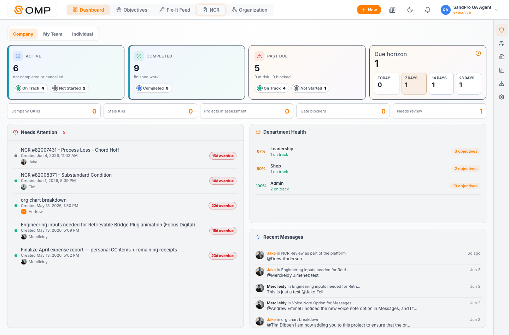
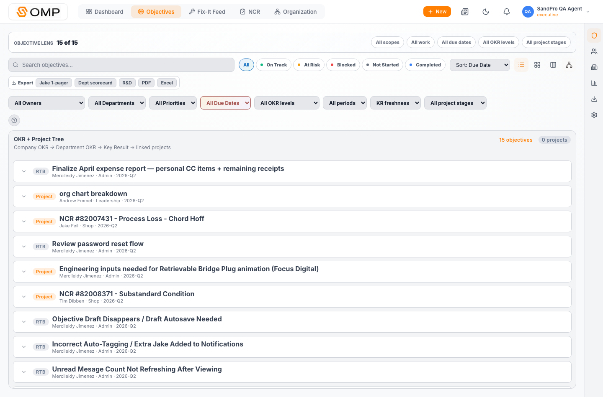

How the two tabs now work together as one operating system.
Prepared: June 11, 2026
Live App: objectivetracker.net
Release: 3cc252d
The Product Idea
Dashboard is now the executive command view. Objectives is now the working system of record. The same OKR, project, quarter, status, stale-KR, and gate-blocker language carries across both tabs, so a signal on the Dashboard can become an actionable work view in Objectives without changing mental models.
Why It Matters To You
The app should feel like one SandPro operating platform, not separate pages that happen to share data. This update makes it easier to see what needs attention, click directly into the right lens, and prove that important work has owner, metrics, evidence, and senior approval.
Dashboard: Decide Where To Look
Scans company, team, and individual health.
Surfaces stale KRs, project gates, overdue work, and review needs.
Turns top-level numbers into clickable lenses instead of static cards.
→
Objectives: Do The Work
Shows list, board, calendar, and OKR tree views.
Holds objective structure, KR metrics, projects, files, audit, and signoffs.
Exports the proof needed for weekly, quarterly, and project reviews.
1Shared operating language
5Dashboard OKR lenses
6Project stages
4Required approvals
Before
Dashboard could show pressure, but the next step was not always obvious. Objectives held the records, but OKR hierarchy, project stage, proof, and approval status were not first-class navigation concepts.
Now
Dashboard tells you what category deserves attention. Objectives opens the matching lens with the exact records, hierarchy, blockers, and exports needed to act or review.
Prepared for SandPro OMP product review.Page 1 of 3
Using The Workflow
How To Move Between Tabs
A practical path from signal to action.
Primary Tabs: Dashboard + Objectives
Lens: Quarterly OKR
1
Start On Dashboard
Use Dashboard to read the current operating picture: active work, completed work, past due pressure, due horizon, department health, recent messages, stale KRs, gate blockers, and review needs.
2
Click A Lens
When a number looks important, click it. The app carries the same filter intent into Objectives, including OKR level, quarter, project stage, stale KR state, or blocker state.
3
Work In Objectives
Use the list or tree view to inspect the underlying records. Open the detail view for structure, metrics, linked projects, files, audit trail, and signoff requirements.

Dashboard adds OKR/project signals alongside the existing status cards.

Objectives exposes the matching tree, filters, and export controls.
What To Use Dashboard For
Daily or weekly scan before a leadership conversation.
Quick answer to: what is late, stale, blocked, or waiting for review?
Starting point for prioritizing attention without opening every objective.
Early warning system for projects that need management approval or cleanup.
What To Use Objectives For
Maintaining OKR hierarchy, KR metrics, and project records.
Reviewing why something was classified as OKR, KR, project, RTB, or needs review.
Uploading support files and capturing assessment artifacts.
Generating Jake one-pagers, scorecards, pipeline exports, and audit packs.
Operator Benefit
You no longer have to remember where a concept lives. Dashboard answers “where should I look?” and Objectives answers “what do we do about it?” with the same terms, filters, and proof model.
Prepared for SandPro OMP product review.Page 2 of 3
Changes + Rationale
What Changed And Why It Matters
The refresh makes planning, execution, approval, and reporting feel connected.
Production: Ready
Deployment: dpl_xfJpptmFFvW6FocmyWakKh9zHwPk
Major Changes Made
Separated Work Classification from progress calculation so OKR meaning and tracking math are no longer tangled together.
Added auto-classification for existing objectives while preserving every current record and showing low-confidence classifications.
Added OKR tree view: Company OKR → Department OKR → Key Result → linked projects.
Added exports for weekly one-pagers, department scorecards, R&D pipeline, quarterly reports, Excel, and project audit packs.
Why It Matters
Leadership can see whether SandPro work is strategic OKR work, measurable KR work, project work, run-the-business work, or needs review.
Projects cannot quietly move forward without evidence, ownership, quality review, finance review, and senior-management agreement.
Dashboard and Objectives now reinforce each other, which improves perceived product quality and reduces “where did that go?” confusion.
Exports give you credible proof for Jake, Tim, Merci, and executive review without rebuilding the same status story manually.
What This Protects
Existing objective history remains intact.
Ambiguous work is flagged for review instead of hidden or guessed away.
Project evidence and documents stay purpose-scoped instead of buried in comments.
Quarterly operation stays primary while annual company OKRs remain supported.
How To Explain It Simply
SandPro OMP now has a coherent planning-to-proof loop. Dashboard shows what needs attention. Objectives explains the structure, metrics, project gates, files, audit, and approvals behind the work. The result is a more trustworthy operating platform for the featured SandPro product.
LiveProduction deployment is ready.
ValidatedProd smoke and framework checks passed.
UseDashboard for signal, Objectives for action.
LaterApproval thresholds can be tuned.
Bottom Line For You
This is about confidence. When SandPro is presented as the featured product, the app now has a visible management system behind the polish: OKRs, projects, approvals, proof, and exports all speak the same language.